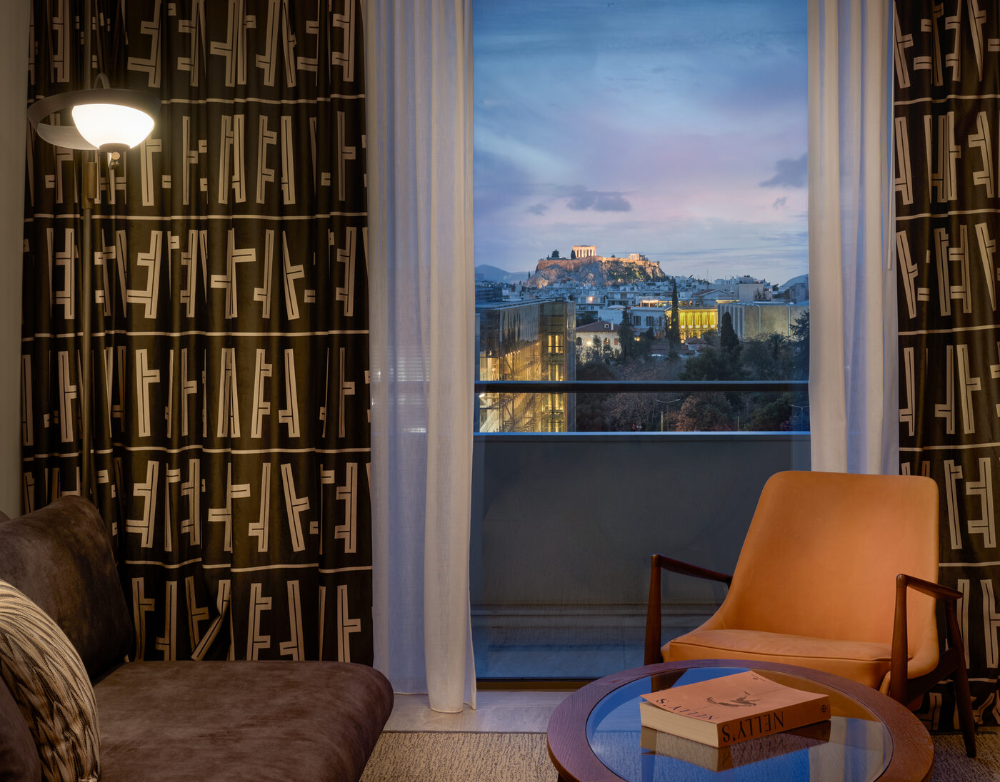

The Monaco Grand Prix does not take place near hotels. It takes place through them. The circuit wraps around lobbies, threads beneath terraces, and turns the Fairmont Hairpin into something between a corner and a concierge service. To stay in Monaco on race weekend is to inhabit the infrastructure of the spectacle itself.
On the weekend of June 7, 2026, the Circuit de Monaco will host its seventy-third Formula 1 world championship race. The barriers will go up along the port. The chicane at the swimming pool will be repainted. And the principality's hotels — already the most densely concentrated collection of palace-grade accommodation in Europe — will raise their rates by three hundred to four hundred per cent, because they can, because the rooms sold out months ago, and because no other Grand Prix in the calendar offers anything close to this particular fusion of proximity and theatre.
This is not a listicle. It is a field guide to the handful of hotels that matter on race weekend, written in the understanding that where you sleep in Monaco during the Grand Prix determines, more than any ticket category, what you actually see.
The Maybourne Riviera — the view from above
The most interesting place to stay for the Monaco Grand Prix is not, technically, in Monaco. The Maybourne Riviera sits on the cliffs of Roquebrune-Cap-Martin, just above the principality's eastern border, in a building of angular, Le Corbusier-inflected geometry designed by Jean-Michel Wilmotte. Sixty-nine rooms. No casino. No hairpin. What it has, instead, is the single most spectacular panoramic view of Monaco and the Mediterranean coastline from any hotel terrace in the region — and the quiet that comes from being ten minutes above the noise.
The architecture is the first thing. Wilmotte's building is a series of sharp, cantilevered planes in pale stone, stacked and shifted like geological strata. It does not resemble the Belle Époque palaces below. It resembles a proposition about what a hotel on a cliff might become if its architect had spent time looking at the Cabanon rather than the Casino. The interiors carry the same conviction: warm stone, clean volumes, considered light. The Maybourne group — the people behind Claridge's, The Connaught, and The Berkeley in London — do not do hesitant.
Dining is by Mauro Colagreco at Ceto, a restaurant that functions as the coastal counterpart to his three-Michelin-starred Mirazur in Menton, just along the coast. Jean-Georges Vongerichten also has a presence. The art collection includes works by Louise Bourgeois and Annie Morris, positioned throughout the public spaces and gardens with the kind of curatorial seriousness that most hotels only simulate. On race weekend, you watch the cars from above — the circuit visible as a ribbon of movement along the port — and then you retreat to Cap-Martin, where the loudest sound is the rosemary.
Rooms from approximately €1,500 per night on race weekend. Book early. Book now, in fact.
Fairmont Monte Carlo — the hotel that is the corner
If the Maybourne offers the philosophical remove, the Fairmont Monte Carlo offers total immersion. This is the hotel that sits directly on the circuit. The famous Fairmont Hairpin — the slowest corner in Formula 1, the one where the cars drop to 60 km/h and the drivers' helmets are close enough to read — wraps around the building's lower floors. The circuit does not pass the Fairmont. The circuit passes through it.
Five hundred and ninety-six rooms. The largest hotel in the principality. A rooftop Nikki Beach terrace that, on race weekend, becomes one of the most sought-after hospitality venues in motorsport. Race-weekend packages include terrace viewing, pit lane access, and the kind of all-inclusive hospitality programme that makes the room rate feel less like accommodation and more like an event ticket with a bed attached. You can hear the engines from your pillow. You can feel the downshift in the bathroom tiles. The Fairmont is not the most refined hotel in Monaco. It is the most immersive Grand Prix experience that exists anywhere in the world, because it is not adjacent to the race — it is part of the infrastructure.
In Monaco, the hotel is not accommodation for the race — it is the race. The circuit wraps around the lobbies, the terraces become grandstands, and check-in comes with a sound check.
Camille AshworthHôtel de Paris Monte-Carlo — Casino Square, centre court
The Hôtel de Paris occupies the northern edge of Casino Square, the geographical and symbolic epicentre of Monaco. Belle Époque grandeur, meticulously renovated in 2019, with the kind of restoration budget that allows a hotel to replace everything while appearing to have touched nothing. The lobby is marble and light. The suites overlooking the Casino carry the particular atmosphere of rooms in which very large decisions have historically been made over very small cups of coffee.
Le Louis XV-Alain Ducasse operates on the ground floor — three Michelin stars, chandeliers, a wine cellar that functions as a small museum. The hotel is where the drivers stay. It is where the team principals dine. It is where the after-parties happen and where, on Sunday evening, the winner's champagne is opened for the second time. The Hôtel de Paris is not the best vantage point for the race itself — Casino Square is a transit zone, not a grandstand — but it is the centre of everything that happens around it.

Photography courtesy of Wallpaper*
Hôtel Hermitage Monte-Carlo — the terrace as grandstand
The Hermitage is the quieter palace. Set back from Casino Square, closer to the port, it offers something the Hôtel de Paris cannot: the Midi Terrace, a sweeping outdoor space with direct, elevated views over Port Hercule and the circuit below. On race weekend, this terrace is a grandstand. You eat lunch — Yannick Alléno's Michelin-starred cooking, served with the precision of someone who understands that the view is doing half the work — and you watch the cars thread through the harbour chicane beneath you.
The building itself is Belle Époque at its most ornamental. The Crystal Salon, designed by Gustave Eiffel, is a winter garden of glass and wrought iron that remains one of the most beautiful interior spaces on the Côte d'Azur. The Spa by Givenchy occupies the lower floors. The Hermitage does not compete with the Hôtel de Paris for celebrity traffic. It offers, instead, the particular luxury of watching the Grand Prix while seated, with a glass of Bandol rosé and a clear sightline to the Swimming Pool complex, and wondering why anyone would choose to do this standing up.
Hôtel Métropole Monte-Carlo — the discreet alternative
The Métropole is for the guest who wants to be in Monaco without being in the thick of it. Jacques Garcia's interiors — rich, layered, residential in scale — give the hotel the atmosphere of a very well-appointed private house rather than a palace. The pool area, designed by Karl Lagerfeld, is an exercise in monochrome precision: black and white tile, clean geometry, the ghost of a man who understood that the Riviera's particular genius was always about editing rather than accumulating.
Yoshi, the hotel's Japanese fine-dining restaurant, operates under the legacy of Joël Robuchon's culinary team and serves what is arguably the best omakase in the principality. The Métropole is set slightly inland, a few blocks from Casino Square, in a position that offers proximity without the pavement-level noise of race weekend. It is the hotel for the guest who has been to the Grand Prix before, who no longer needs to see the cars from the breakfast room, and who values a quiet lobby and an excellent concierge above a terrace with a view of the hairpin.
The Monaco Grand Prix takes place on June 7, 2026 on the Circuit de Monaco. Race-weekend rates at the hotels listed above range from approximately €1,200 to €5,000 per night, with premium suites commanding significantly more. Booking for the best rooms opens a year in advance; the most desirable suites at the Fairmont and Hôtel de Paris sell out in hours. The Maybourne Riviera is a ten-minute drive from the circuit and offers complimentary transfers. The Hermitage, Hôtel de Paris, and Métropole are within walking distance of every section of the track.
Photography courtesy of Wallpaper*